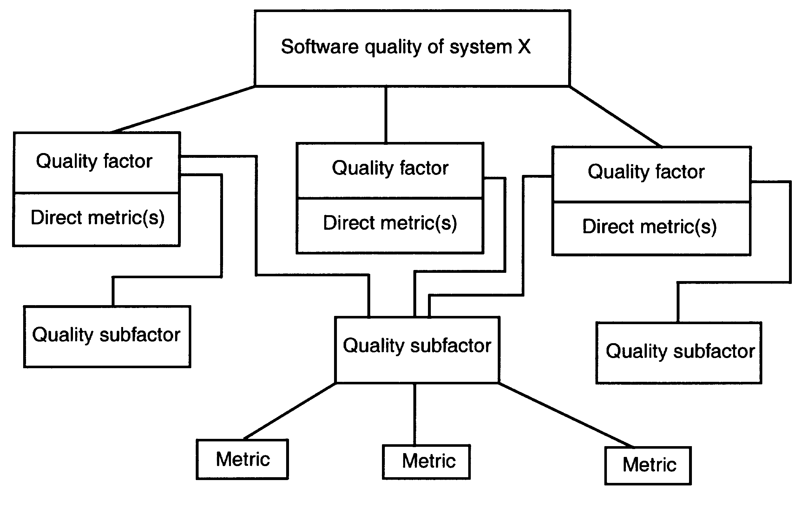
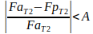
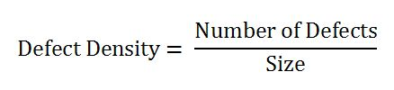
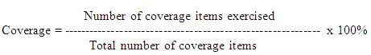
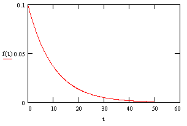
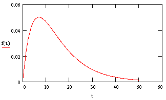

Software Quality Metrics
Here,
the goals of software measurement are to answer, among others, the
following questions:
• Is
it possible to predict the error-proneness of a system using software
measures from its design phase.
• Is
it possible to extract quantitative features from the representation
of a software design to enable us to predict the degree of
maintainability of a software system.
• Are
there any quantifiable, key features of the program code of a module
that would enable us to predict the degree of difficulty of testing
for that module, and the number of residual errors in the module
after a
particular
level of testing has occurred.
• Is
it possible to extract quantifiable features from the representation
of a software design to enable us to predict the amount of effort
required to build the software described by that design.
• Are
there quantifiable features that can be extracted from the program
code of a subroutine that can be used to help predict the amount of
effort required to test the subroutine.
• Are
there features in order to predict the size of a project from the
specification phase.
• What
properties of software measures are required in order to determine
the quality of a design.
• What
are the right software measures to underlie the software quality
attributes of the ISO 9126 norm by numbers
The
major question for people who want to use software measures or using
software measures is: what are the benefits of software measurement
for practitioners. Software measures re used to measure specific
attributes of a software product or software development process
We
use software measures to derive:
A
basis for estimates,
To
track project progress,
To
determine (relative) complexity,
To
help us to understand when we have archived a desired state of
quality,
To
analyze or defects,
and
to experimentally validate best practices.
In
short: they help us to make better decisions.
2. Definitions
For
the purposes of this standard, the following terms and definitions
apply. IEEE Std 100-1996 and IEEE Std 610.12-1990 should be
referenced for terms not defined in this clause.
2.1
attribute:
A measurable physical or abstract property of an entity.
2.2
critical
range:
Metric values used to classify software into the categories of
acceptable, marginal, or unacceptable.
2.3
critical
value:
Metric value of a validated metric that is used to identify software
that has unacceptable quality.
2.4
direct
metric:
A metric that does not depend upon a measure of any other attribute.
2.5
direct
metric value:
A numerical target for a quality factor to be met in the final
product. For example, mean time to failure (MTTF) is a direct metric
of final system reliability.
2.6
measure:
(A) A way to ascertain or appraise value by comparing it to a norm.
(B) To apply a metric.
2.7
measurement:
The act or process of assigning a number or category to an entity to
describe an attribute of that entity. A figure, extent, or amount
obtained by measuring.
2.8
metric:
See: software quality metric.
NOTE
The term metric is used in place of the term software quality metric.
2.9
metrics
framework:
A decision aid used for organizing, selecting, communicating, and
evaluating the required quality attributes for a software system. A
hierarchical breakdown of quality factors, quality sub-factors, and
metrics for a software system.
2.10
metrics
sample:
A set of metric values that is drawn from the metrics database and
used in metrics validation.
2.11
metric
validation:
The act or process of ensuring that a metric reliably predicts or
assesses a quality factor.
2.12
metric
value:
A metric output or an element that is from the range of a metric.
2.13
predictive
metric:
A metric applied during development and used to predict the values of
a software quality factor.
2.14
predictive
metric value:
A numerical target related to a quality factor to be met during
system development. This is an intermediate requirement that is an
early indicator of final system performance. For example, design or
code errors may be early predictors of final system reliability.
2.15
process
metric:
A metric used to measure characteristics of the methods, techniques,
and tools employed in developing, implementing, and maintaining the
software system
2.16
product
metric:
A metric used to measure the characteristics of any intermediate or
Þnal product of the software development process.
2.17
quality
attribute:
A characteristic of software, or a generic term applying to quality
factors, quality subfactors, or metric values.
2.18
quality
factor:
A management-oriented attribute of software that contributes to its
quality.
2.19
quality
factor sample:
A set of quality factor values that is drawn from the metrics
database and used in metrics validation.
2.20
quality
factor value:
A value of the direct metric that represents a quality factor. See
also: metric value.
2.21
quality
requirement:
A requirement that a software attribute be present in software to
satisfy a contract, standard, specification, or other formally
imposed document.
2.22
quality
subfactor:
A decomposition of a quality factor or quality subfactor to its
technical components.
2.23
software
component:
A general term used to refer to a software system or an element, such
as module, unit, data, or document.
2.24
software
quality metric:
A function whose inputs are software data and whose output is a
single numerical value that can be interpreted as the degree to which
software possesses a given attribute that affects its quality.
2.25
validated
metric:
A metric whose values have been statistically associated with
corresponding quality factor values.
3. Software quality metrics framework
(informative)
Software
quality
is the degree
to which software possesses a desired combination of quality
attributes. The purpose
of software metrics is to make assessments throughout the software
life cycle as to whether the software quality requirements are being
met. The use of software metrics reduces subjectivity in the
assessment and control of software quality by providing a
quantitative basis for making decisions about software quality.
However,
the use of software metrics does not eliminate the need for human
judgment in software assessments. The use of software metrics within
an organization or project is expected to have a beneficial effect by
making software quality more visible.
More
specifically, the use of this standards methodology for measuring
quality enables an organization to:
Assess
achievement of quality goals;
Establish
quality requirements for a system at its outset;
Establish
acceptance criteria and standards;
Evaluate
the level of quality achieved against the established requirements;
Detect
anomalies or point to potential problems in the system;
Predict
the level of quality that will be achieved in the future;
Monitor
changes in quality when software is modified;
Assess
the ease of change to the system during product evolution;
Validate
a metrics set.
The
software quality metrics framework shown in Figure 1 is designed to
be flexible. It permits additions, deletions, and modifications of
quality factors, quality subfactors, and metrics. Each level may be
expanded to several sub levels. The framework can thus be applied to
all systems and can be adapted as appropriate without changing the
basic concept.
Figure
1
Software quality metrics framework

The
first level of the software quality metrics framework hierarchy
begins with the establishment of quality requirements by the
assignment of various quality attributes, which are used to describe
the quality of the entity system X. All attributes defining the
quality requirements are agreed upon by the project team, and then
the definitions are established. Quality factors that represent
management and user-oriented views are then assigned to the
attributes. If necessary, quality sub factors are then assigned to
each quality factor. Associated with each quality factor is a direct
metric that serves as a quantitative representation of a quality
factor. For example, a direct metric for the factor reliability could
be mean time to failure (MTTF). Identify one or more direct metrics
and target values to associate with each factor, such as an execution
time of 1 hour, that is set by project management. Otherwise, there
is no way to determine whether the factor has been achieved.
At
the second level of the hierarchy are the quality subfactors that
represent software-oriented attributes that indicate quality. These
can be obtained by decomposing each quality factor into measurable
software attributes. Quality subfactors are independent attributes of
software, and therefore may correspond to more than one quality
factor. The quality subfactors are concrete attributes of software
that are more meaningful than quality factors to technical personnel,
such as analysts, designers, programmers, testers, and maintainers.
The decomposition of quality factors into quality subfactors
facilitates objective communication between the manager and the
technical personnel regarding the quality objectives.
At
the third level of the hierarchy the quality subfactors are
decomposed into metrics used to measure system products and processes
during the development life cycle. Direct metric values, or quality
factor values, are typically unavailable or expensive to collect
early in the software life cycle.
From
top to bottom
the framework facilitates:
Establishment
of quality requirements, in terms of quality factors, by managers
early in a system's life cycle;
Communication
of the established quality factors, in terms of quality subfactors,
to the technical personnel;
Identification
of metrics that are related to the established quality factors and
quality subfactors.
From
bottom to top
the framework enables the managerial and technical personnel to
obtain feedback by
Evaluating
the software products and processes at the metrics level;
Analyzing
the metric values to estimate and assess the quality factors.
4. The software quality metrics
methodology
The
software quality metrics methodology is a systematic approach to
establishing quality requirements and identifying, implementing,
analyzing, and validating the process and product software quality
metrics for a software system. It comprises five steps (see 4.1
through 4.5).
These
steps are intended to be applied iteratively because insights gained
from applying a step may show the need for further evaluation of the
results of prior steps. Each step states the activities needed to
accomplish the indicated results.
4.1
Establish software quality requirements
The
result of this step is a list of the quality requirements. The
activities to accomplish this result are given in 4.1.1 through
4.1.3.
4.1.1
Identify a list of possible quality requirements
Identify
quality requirements that are applicable to the software system. Use
organizational experience, required standards, regulations, or laws
to create this list. In addition, list other system requirements that
may affect the feasibility of the quality requirements. Consider
contractual requirements and acquisition concerns, such as cost or
schedule constraints, warranties, customer metrics requirements, and
organizational self-interest. Do not rule out mutually exclusive
requirements at this point. Focus on quality factor/direct metric
combinations instead of predictive metrics.
Ensure
that all parties involved in the creation and use of the system
participate in the quality requirements identification process.
4.1.2
Determine the list of quality requirements
Rate
each of the listed quality requirements by importance. Determine the
list of the possible quality requirements by doing the following:
a)
Survey
all involved parties.
Discuss the relative priorities of the requirements with all involved
parties. Have each group weigh the quality requirements against the
other system requirements and constraints. Ensure that all viewpoints
are considered.
b)
Create
the list of quality requirements.
Resolve the results of the survey into a single list of quality
requirements. The proposed quality factors for this list may have
cooperative or conflicting relationships. Resolve any conflicts among
requirements at this point. In addition, if the choice of quality
requirements is in conflict with cost, schedule, or system
functionality, alter one or the other.
Exercise
care in choosing the desired list to ensure that the requirements are
technically feasible, reasonable, complementary, achievable, and
verifiable. Obtain agreement by all parties to this final list.
4.1.3
Quantify each quality factor
For
each quality factor, assign one or more direct metrics to represent
the quality factor, and assign direct metric values to serve as
quantitative requirements for that quality factor. For example, if
high efficiency was one of the quality requirements from 4.1.2,
assign a direct metric (e.g., actual resource utilization/ allocated
resource utilization with a value of 90%). Use direct metrics to
verify the achievement of the quality requirements.
The
quantified list of quality requirements and their definitions again
is approved by all involved parties.
4.2
Identify software quality metrics
The
result of this step is an approved metrics set. The activities to
accomplish this result are given in 4.2.1 through 4.2.3.
4.2.1
Apply the software quality metrics framework
The
quantified list of quality requirements and their definitions again
is approved by all involved parties. Create a chart of the quality
requirements based on the hierarchical tree structure found in Figure
1. At this
point,
complete only the quality factor level. Next, decompose each quality
factor into quality subfactors as indicated in Clause 3. Continue the
decomposition into quality subfactors for as many levels as needed
until the quality subfactor level is complete.
Using
the software quality metrics framework, decompose the quality
subfactors into metrics. For each validated metric on the metric
level, assign a target value and a critical value and range that
should be achieved during development.
Have
the framework revised and the target values for the metrics reviewed
and approved by all involved parties.
Use
only validated metrics (i.e., either direct metrics or metrics
validated with respect to direct metrics) to assess current and
future product and process quality (see 4.5 for a description of the
validation methodology). Retain non-validated metrics as candidates
for future analysis. Furthermore, use only metrics that are
associated with the quality requirements of the software project.
Document
each metric using the format shown in Table 1.
4.2.2
Perform a cost-benefit analysis
4.2.2.1
Identify the costs of implementing the metrics
Identify
and document (see Table 1) all the costs associated with each metric
in the metrics set. For each metric, estimate and document the
following costs and impacts:
a)
Metrics utilization costs incurred by collecting data; automating
metrics calculations; and applying, interpreting, and reporting the
results;
b)
Software change costs incurred by changing the development process;
c)
Organizational structure change costs incurred by producing the
software;
d)
Special equipment required to implement the metrics plan;
e)
Training required to implement the metrics plan.
Table
1 Metrics
set
|
Item
|
Description
|
|
Name
|
Name
given to the metric.
|
|
Costs
|
Costs
of using the metric (see 4.2.2.1).
|
|
Benefits
|
Benefits
of using the metric (see 4.2.2.2).
|
|
Impact
|
Indication
of whether a metric can be used to alter or halt the project (ask,
Can the metric be used to indicate deficient software quality?).
|
|
Target
value
|
Numerical
value of the metric that is to be achieved in order to meet
quality requirements. Include the critical value and the range of
the metric.
|
|
Quality
factors
|
Quality
factors that are related to this metric.
|
|
Tools
|
Software
or hardware tools that are used to gather and store data, compute
the metric, and analyze the results.
|
|
Application
|
Description
of how the metric is used and what its area of application is.
|
|
Data
items
|
Input
values that are necessary for computing the metric values.
|
|
Computation
|
Explanation
of the steps involved in the metrics computation.
|
|
Interpretation
|
Interpretation
of the results of the metrics computation (see 4.4.1).
|
|
Considerations
|
Considerations
of the appropriateness of the metric (e.g., Can data be collected
for this metric? Is the metric appropriate for this application?).
|
|
Training
required
|
Training
required to implement or use the metric.
|
|
Example
|
An
example of applying the metric.
|
|
Validation
history
|
Names
of projects that have used the metric, and the validity criteria
the metric has satisfied.
|
|
References
|
References,
such as a list of projects and project details, giving further
details on understanding or implementing the metric.
|
4.2.2.2
Identify the benefits of applying the metrics
Identify
and document the benefits that are associated with each metric in the
metrics set (see Table 1). Benefits to consider include the
following:
a)
Identify quality
goals
and increase awareness of the goals.
b)
Provide timely feedback
of quality problems to the development process.
c)
Increase customer satisfaction by quantifying the quality of the
software before it is delivered.
d)
Provide a quantitative basis for making decisions about software
quality.
e)
Reduce software life cycle costs by improving process efficiency.
4.2.2.3
Adjust the metrics set
Weigh
the benefits, tangible and intangible, against the costs of each
metric. If the costs exceed the benefits of a given metric, alter or
delete it from the metrics set. On the other hand, for metrics that
remain, make plans for any necessary changes to the software
development process, organizational structure, tools, and training.
In most cases it will not be feasible to quantify benefits. In these
cases, exercise judgment in weighing qualitative benefits against
quantitative costs.
4.2.3
Gain commitment to the metrics set
Have
all involved parties review the adjusted metrics. Have the metrics
set adopted and supported by this group.
4.3
Implement the software quality metrics
The
outputs of this step are a description of the data items, a
traceability matrix, and a training plan and schedule. The activities
to accomplish this result are given in 4.3.1 through 4.3.3.
4.3.1
Define the data collection procedures
For
each metric in the metrics set, determine the data that will be
collected and determine the assumptions that will be made about the
data (e.g., random sample and subjective or objective measure).
Show
the flow of data from point of collection to evaluation of metrics.
Identify
tools and describe how they will be used.
Describe
data storage procedures.
Establish
a traceability matrix between metrics and data items.
Identify
the organizational entities that will participate in data collection,
including those responsible for monitoring data collection.
Describe
the training and experience required for data collection and the
training process for personnel involved.
Describe
each data item thoroughly, using the format shown in Table 2.
4.3.2
Prototype the measurement process
Test
the data collection and metrics computation procedures on selected
software that will act as a prototype. Select samples that are
similar to the project(s) on which the metrics will be used. Make an
analysis to deter mine if the data are collected uniformly and if
instructions have been interpreted consistently. In particular, check
data that require subjective judgments to determine if the
descriptions and instructions are clear enough to ensure uniform
results.
Examine
the cost of the measurement process for the prototype to verify or
improve the cost analysis.
Use
the results collected from the prototype to improve the metric
descriptions (see Table 1) and descriptions of data items (see Table
2).
4.3.3
Collect the data and compute the metric values
Using
the formats in Tables 1 and 2, collect and store data in the project
metrics database at the appropriate time in the life cycle. Check the
data for accuracy and proper unit of measure.
Table
2 Data
item description
|
Item
|
Description
|
|
Name
|
Name
given to the data item.
|
|
Metrics
|
Metrics
that are associated with the data item.
|
|
Definition
|
Straightforward
description of the data item.
|
|
Source
|
Location
of where the data item originates.
|
|
Collector
|
Entity
responsible for collecting the data.
|
|
Timing
|
Time(s)
in life cycle at which the data item is to be collected. (Some
data items are collected more than once.)
|
|
Procedures
|
Methodology
(e.g., automated or manual) used to collect the data.
|
|
Storage
|
Location
of where the data are stored.
|
|
Representation
|
Manner
in which the data are represented, e.g., precision and format
(Boolean, dimensionless, etc.).
|
|
Sample
|
Method
used to select the data to be collected and the percentage of the
available data that is to be collected.
|
|
Verification
|
Manner
in which the collected data are to be checked for errors.
|
|
Alternatives
|
Methods
that may be used to collect the data other than the preferred
method.
|
|
Integrity
|
Person(s)
or organization(s) authorized to alter the data item and under
what conditions.
|
Monitor
the data collection. If a sample of data is used, verify that
requirements such as randomness, minimum size of sample, and
homogeneous sampling have been met. Check for uniformity of data if
more than one person is collecting it.
Compute
the metric values from the collected data.
4.4
Analyze the software metrics results
The
results of this step are changes to the organization and development
process, which are indicated from interpreting and using the
measurement data. The activities to accomplish this result are given
in 4.4.1 through 4.4.4.
4.4.1
Interpret the results
Interpret
and record the results. Analyze the differences between the collected
metric data and the target values. Investigate significant
differences.
4.4.2
Identify software quality
Identify
and review quality metric values for software components. Identify
quality metric values that are outside the anticipated tolerance
intervals (low or unexpected high quality) for further study.
Unacceptable quality may be manifested as excessive complexity,
inadequate documentation, lack of traceability, or other undesirable
attributes. The existence of such conditions is an indication that
the software may not satisfy quality requirements when it becomes
operational. Because many of the direct metrics that are usually of
interest cannot be collected during software development (e.g.,
reliability metrics), use validated metrics when direct metrics are
not available. Use direct or validated metrics for software
components and process steps. Compare metric values with critical
values of the metrics. Analyze in detail software components whose
values deviate from the critical values. Depending on the results of
the analysis, redesign (acceptable quality is achieved by redesign),
scrap (quality is so poor that redesign is not feasible), or do not
change (deviations for critical metric values are judged to be
insignificant) the software components.
4.4.3
Make software quality predictions
Use
validated metrics during development to make predictions of direct
metric values. Compare predicted values of direct metrics with target
values to determine whether to flag software components for detailed
analysis. Make predictions for software components and process steps.
Analyze in detail software components and process steps whose
predicted direct metric values deviate from the target values.
4.4.4
Ensure compliance with requirements
Use
direct metrics to ensure compliance of software products with quality
requirements during system and acceptance testing. Use direct metrics
for software components and process steps. Compare these metric
values with target values of the direct metrics. Classify software
components and process steps whose measurements deviate from the
target values as non-compliant.
4.5
Validate the software quality metrics
The
result of this step is a set of validated metrics for making
predictions of quality factor values. The activities to accomplish
this result are given in 4.5.1 through 4.5.3.
4.5.1
Apply the validation methodology
The
purpose
of metrics
validation
is to identify
both product
and process
metrics that can predict specified quality factor values,
which are quantitative representations of quality requirements.
Metrics
shall indicate whether quality requirements have been achieved or are
likely to be achieved in the future.
When it is possible to measure quality factor values at the desired
point in the life cycle,
direct metrics
shall be used to evaluate software quality. At some points in the
life cycle, certain quality factor values (e.g., reliability) are not
available. They are obtained after delivery or late in the project.
In these cases, validated metrics shall be used early in a project to
predict quality factor values.
Validation
does not mean a universal validation of the metrics for all
applications. Rather it refers to validating the relationship
between a set of metrics and a quality factor for a given
application.
The
history of the application of metrics indicates that predictive
metrics
were seldom validated (i.e., it was not demonstrated through
statistical analysis that the metrics measured software
characteristics that they purported to measure). However, it
is important that predictive
metrics
be validated before they are used to evaluate software quality.
Otherwise, metrics might be misapplied (i.e., metrics might be used
that have little or no relationship to the desired quality
characteristics).
Although
quality subfactors are useful when identifying and establishing
quality
factors and metrics,
they are
not used in metrics validation,
because
the focus in validation is on determining whether a statistically
significant relationship exists between predictive metric values and
quality factor values.
Quality
factors may be affected by multiple variables. A single metric,
therefore, may not sufficiently represent any one quality factor if
it ignores these other variables.
4.5.2
Apply validity criteria
To
be considered valid, a predictive
metric
shall have a
high degree of association with the quality factors
it represents by conforming to the thresholds listed below. A metric
may be valid with respect to certain validity criteria and invalid
with respect to other criteria. For the purpose of assessing whether
a metric is valid,
the following thresholds shall be designated:
V
- square of the linear correlation coefficient
B
- rank correlation coefficient
A
- prediction error
𝜶
-
confidence level
P
- success rate
The
description of each validity criterion is given below. For a
numerical example of metrics validation calculations, see Annex B.
a)
Correlation.
The variation in the quality factor values explained by the variation
in the metric values, which is given by the square of the linear
correlation
coefficient (R2)
between the metric and the corresponding quality factor, shall
exceed V.
This
criterion assesses whether there is a sufficiently strong linear
association between a quality factor and a metric to warrant using
the metric as a substitute for the quality factor, when it is
infeasible to use the latter.
b)
Tracking.
If a metric M is directly related to a quality factor F, for a given
product or process, then a change in a quality factor value from F T1
to F T2
, at times T1
and
T2,
shall be accompanied by a change in metric value from M T1
to M T2
.
This change shall be in the same direction (e.g., if F increases, M
increases). If M is inversely related to F, then a change in F shall
be accompanied by a change in M in the opposite direction (e.g., if F
increases, M decreases). To perform this test, compute the
coefficient of rank correlation (r) from n paired values of the
quality factor and the metric.
Each
of the quality factor/metric pairs shall be measured at the same
point in time, and the n pairs of values are measured at n points in
time. The absolute value of r shall exceed B. This criterion assesses
whether a metric is capable of tracking changes in product or process
quality over the life cycle.
c)
Consistency.
If quality factor values F1
, F2
, Fn
, corresponding to products or processes 1, 2, n, have the
relationship F1
> F2
> Fn
, then the corresponding metric values shall have the relationship M
1
>
M 2
> M n
.
To perform this test, compute the coefficient of rank correlation (r)
between paired values (from the same software components) of the
quality factor and the metric. The absolute value of
r shall exceed B.
This
criterion assesses whether there is consistency between the ranks of
the quality factor values of a set of software components and the
ranks of the metric values for the same set of software components.
This criterion shall be used to determine whether a metric can
accurately rank, by quality, a set of products or processes.
d)
Predictability.
If a metric is used at time T1
to predict a quality factor for a given product or process, it shall
predict a related
quality factor
FpT2
with an accuracy of

(1)
where
FaT2
is the actual
value of F at time T2.
This
criterion assesses whether a metric is capable of predicting a
quality factor value with the required accuracy.
e)
Discriminative
power.
A metric shall be able to discriminate between high-quality software
components (e.g., high MTTF) and low-quality software components
(e.g., low MTTF). The set of metric values associated with the former
should be significantly higher (or lower) than those associated with
the latter.
This
criterion assesses whether a metric is capable of separating a set of
high-quality software components from a set of low-quality
components. This capability identified critical values for metrics
that shall be used to identify software components that have
unacceptable quality. To perform this test, put the quality factor
and metric data in the form of a contingency table and compute the
chi-square statistic. This value shall exceed the chi-square
statistic corresponding to 𝝰.
f)
Reliability.
A metric shall demonstrate the correlation, tracking, consistency,
predictability, and discriminative power properties for at least P%
of the applications of the metric.
This
criterion is used to ensure that a metric has passed a validity test
over a sufficient number or percentage of applications so that there
shall be confidence that the metric can perform its intended function
consistently.
4.5.3
Validation procedure
4.5.3.1
Identify the quality factors sample
A
sample of quality factors shall be drawn from the metrics database.
4.5.3.2
Identify the metrics sample
A
sample from the same domain (e.g., same software components), as used
in 4.5.3.1, shall be drawn from the metrics database.
4.5.3.3
Perform a statistical analysis
The
analysis described in 4.5.2 shall be performed.
Before
a metric is used to evaluate the quality of a product or process, it
shall be validated against the criteria described in 4.5.2. If a
metric does not pass all of the validity tests, it shall only be used
according to the criteria prescribed by those tests (e.g., if it only
passes the tracking validity test, it shall be used only for tracking
the quality of a product or process).
4.5.3.4
Document the results
Documented
results shall include the direct metric, predictive metric,
validation criteria, and numerical results, as a minimum.
4.5.3.5
Re-validate the metrics
A
validated metric may not necessarily be valid in other environments
or future applications. Therefore, a predictive metric shall be
revalidated before it is used for another environment or application.
4.5.3.6
Evaluate the stability of the environment
Metrics
validation shall be undertaken in a stable development environment
(i.e., where the design language, implementation language, or project
development tools do not change over the life of the project in which
validation is performed). An organization initiates conformance to
the validation requirements of this standard by collecting and
validating metrics on a project (the validation project). This
project shall be similar to the one in which the metrics are applied
(the application project) with respect to software engineering
skills, application, size, and software engineering environment.
Validation
and application of metrics shall be performed during the same life
cycle phases on different projects. For example, if metric X is
collected during the design phase of project A and later validated
with respect to quality factor Y, which is collected during the
operations phase of project A, metric X would be used during the
design phase of project B to predict quality factor Y with respect to
the operations phase of project B.
Annex A
(informative)
Additional
frameworks
This
annex describes additional frameworks that could be considered in
establishing a metrics framework in an organization.
A.1
Goal/question/metric (GQM) paradigm
The
GQM paradigm is a mechanism for defining and evaluating a set of
operational goals, using measurement. It represents a systematic
approach to tailoring and integrating goals with models of the
software processes, products, and quality perspectives of interest,
based upon the specific needs of the project and the organization.
The
goals are defined in an operational, tractable way by refining them
into a set of quantifiable questions that are used to extract the
appropriate information from the models. The questions and models, in
turn, define a specific set of metrics and data for collection and
provide a framework for interpretation.
The
GQM paradigm was originally developed for evaluating defects for a
set of projects in the National Aeronautics and Space Administration
(NASA)/Goddard Space Flight Center (GSFC) environment. The
application involved a set of case study experiments. It was then
expanded to include various types of experimental approaches,
including controlled experiments.
Although
the GQM paradigm was originally used to define and evaluate goals for
a particular project in a particular environment, its use has been
expanded to a larger context. It is used as the goal-setting step in
an evolutionary improvement paradigm tailored for a software
development organization, the Quality Improvement Paradigm (QIP), and
an organizational approach for building software competencies and
supplying them to projects, the Experience Factory (EF).
Applying
the GQM paradigm involves
a)
Developing
a set of
corporate, division, and project goals
for productivity and quality
(e.g., customer satisfaction, on-time delivery, and improved
quality);
b)
Generating
questions (based
upon models) that define those goals as completely as possible in a
quantifiable way;
c)
Specifying
the measures
needed to be collected to answer those questions and to track process
and product conformance to the goals;
d)
Developing mechanisms for data collection;
e)
Collecting,
validating, and analyzing
the data in real time to provide feedback to projects for corrective
action, and analyzing the data in a post-mortem fashion to assess
conformance to the goals and make recommendations for future
improvements.
The
process of setting goals and refining them into quantifiable
questions is complex and requires experience. In order to support
this process, a set of templates for setting goals, and a set of
guidelines for deriving questions and metrics have been developed.
These templates and guidelines reflect the GSFC experience from
having applied the GQM paradigm in a variety of environments. The
current set of templates and guidelines represent our current
thinking and well may change over time as experience grows.
Goals
may be defined for any object, for a variety of reasons, with respect
to various models of quality, from various points of view, relative
to a particular environment. The goal is defined by filling in a set
of values for the various parameters in the template. Template
parameters
include purpose
(what object and why), perspective
(what aspect and who), and the environmental
characteristics (where).
Purpose:
Analyze some (objects:
processes, products, other experience models) for the purpose of
(why: characterization, evaluation, prediction, motivation,
improvement)
Perspective:
with respect to (what
aspect:
cost, correctness, defect removal, changes, reliability, user
friendliness, etc.) from the point of view of (who:
user, customer, manager, developer, corporation,etc.)
Environment:
in the following context: (where:
problem factors, people factors, resource factors, process factors,
etc.)
Example:
Analyze the (system testing method) for the purpose of (evaluation)
with respect to a model of (defect removal effectiveness) from the
point of view of the (developer) in the following context: the
standard NASA/GSFC environment, i.e., process model [e.g., Software
Engineering Laboratory (SEL) version of the waterfall model],
application (ground support software for satellites), machine, etc.
The
purpose
is meant to define the object or objects of study, what is going to
be done, and why it is being done. There may be several objects and
several purposes. It is clear that the author must avoid complex
objectives. In some cases it may be wise to break a complex goal into
several simpler goals.
The
perspective
is meant to define a particular angle or set of angles for
evaluation. The author may choose more than one model, e.g., defects
and changes, and more than one point of view, e.g., the corporation
and the project manager. The author
should define the model and assume the mind-set of the person who
wants to know the information so that all aspects of the evaluation
are performed from that point of view.
The
purpose
of the environment is to define the context of the study by defining
all aspects of the project so it can be categorized correctly and the
appropriate set of similar projects can be found as a basis of
comparison. Types of quality factors include process factors, people
factors, problem factors, methods, tools, and constraints. In
general, the environment should include all those quality factors
that may be common among all projects and become part of the database
for future comparisons. Thus the environmental quality factors,
rather than the values associated with these quality factors, should
be consistent across several goals within the project and the
organization. Some quality factors may have already been specified as
part of the particular object or model under study and thus appear
there in greater depth and granularity.
A.2
Practical software measurement (PSM)
This
clause contains an overview of PSM. Software measurement does not
replace other management skills and techniques. Neither does it
operate in a vacuum. In particular, measurement enables the other
quantitative disciplines of risk management and financial performance
management. These three disciplines each have a planning and a
tracking part.
While
these disciplines are often promoted and implemented independently,
the greatest value is derive from an integrated approach. Risk
analysis helps to identify and prioritize issues that drive the
definition of the measurement process. The measurement process helps
quantify the likelihood and impact of risks. The measurement process
provides an objective basis for reporting financial performance using
techniques like earned value. Risks, status measures, and financial
performance all need to be considered when making project decisions.
Together, these three quantitative management disciplines complement
traditional management skills and techniques.
How
does an organization that wants to take advantage of the benefits of
software measurement proceed? A number of specific measurement
prescriptions have been offered to government and industry
organizations with limited success. Rather than propose another fixed
measurement scheme, PSM presents a flexible measurement approach. PSM
views measurement as a process that must be adapted to the technical
and management characteristics of each project. This measurement
process is risk and issue driven. That is, it provides information
about the specific risks, issues, and objectives important to project
success.
The
PSM approach defines three
basic measurement activities necessary
to get measurement into practice.
The
first two activities, tailoring
measures to address project information
needs and applying
measures to obtain insight into project risks and issues,
are the basic subprocesses of the measurement process. The third
activity, implementing
measurement,
includes the tasks necessary to establish this measurement process
within an organization.
The
tailoring
activity
addresses the
selection of an effective and economical set of measures
for the project.
The
application
activity involves
collecting,
analyzing, and acting
upon the data defined in the tailoring activity. PSM recommends that
these two activities be performed by a measurement
analyst
who is independent
of the software developer.
The
implementation
activity
addresses the cultural and organizational changes necessary to
establish a measurement process. Implementing a measurement process
requires the support of project and organizational managers.
The
measurement process must be integrated into the developer’s
software process.
The nature of the developer’s process determines the opportunities
for measurement. Because the software process itself is dynamic, the
measurement process also must change and adapt as the project
evolves. This makes the activities of measurement
tailoring
and application iterative
throughout the project life cycle.
The
issues, measures, and analysis techniques change over time to best
meet the project’s information needs.
A.2.1
Principles
Each
project is described by different management and technical
characteristics, and by a specific set of software risks and issues.
To address the unique measurement requirements of each project, PSM
explains how to tailor and apply a generally defined software
measurement process to meet specific project information needs. To
help do this, PSM provides nine principles that define the
characteristics of an effective measurement process. These principles
are based upon actual measurement experience on successful projects.
a)
Project risks, issues, and objectives drive the measurement
requirements.
b)
The developer’s process defines how the software is actually
measured.
c)
Collect and analyze data at a level of detail sufficient to identify
and isolate problems.
d)
Implement an independent analysis capability.
e)
Use a structured analysis process to trace the measures to the
decisions.
f)
Interpret the measurement results in the context of other project
information.
g)
Integrate software measurement into the project management process
throughout the software life cycle.
h)
Use the measurement process as a basis for objective communication.
I)
Focus initially on single project analysis.
Experience
has shown that a measurement process that adheres to these principles
is more likely to succeed.
A.2.2
Issues
The
purpose of software measurement is to help management achieve project
objectives, identify and track risks, satisfy constraints, and
recognize problems early. These management concerns are referred to,
collectively, as issues. Note that issues are not necessarily
problems, but rather they define areas where problems may occur. An
initial set of issues are identified at the outset of the project.
This issue set evolves and changes as the project progresses. Almost
all issues can be expressed as risks. Conducting a thorough risk
analysis at project outset facilitates measurement implementation.
However, even if a formal risk analysis has not been performed,
issues still can be identified.
PSM
emphasizes identifying project issues at the start of a project and
then using the measurement process to provide insight to those
issues. While some issues are common to most or all projects, each
project typically has some unique issues. Moreover, the priority of
issues usually varies from project to project.
The
six common
software issues
addressed in this standard are as follows:
a)
Schedule and progress;
b)
Resources and cost;
c)
Growth and stability;
d)
Product quality;
e)
Development performance;
f)
Technical adequacy.
These
common issues may also be thought of as classes or categories of
risks.
At
the start of a project, or when major changes are implemented, each
of these issues is analyzed in terms of the feasibility of the plan.
For example, the project manager may ask questions such as, “Is
this a reasonable size estimate?” or, “Can the software be
completed with the proposed amount of effort and schedule?” Once
the project is underway, the manager’s concern turns to
performance. The key questions then become ones such as, “Is
the project on schedule?” or,
“Is the quality good enough?”
It
is important to note that software issues are not independent. For
example, requirements growth may result in schedule delays or effort
overruns. Moreover, the impact of the addition of work to a project
(size growth) may be masked, in terms of level of effort, by
stretching out the schedule. Thus, it is important that issues be
considered together, rather than individually, to get a true
understanding of project status.
Focusing
measurement attention on items that provide information about the
project's issues also minimizes the effort required for the
measurement process. Resources are not expended collecting data that
may not get used.
Experience
from a wide variety of commercial and government organizations shows
that the cost of implementing and operating a measurement process as
described in PSM ranges from 1% to 5% of the project's software
budget. This is a relatively small amount when compared to the cost
of conventional review- and documentation-based project-monitoring
techniques.
Annex
B
(informative)
Sample
metrics validation calculations
B.1
Correlation validity criterion
Assume
V, the square of the linear correlation coefficient, has been
designated as 0.7 and the correlation coefficient between a
complexity metric and the quality factor reliability is 0.9. The
square of this is 0.81. Eighty one percent of the variation in the
quality factor is explained by the variation in the metric. If this
relationship is demonstrated over a representative sample of software
components, conclude that the metric correlates with reliability.
B.2
Tracking validity criterion
Assume
B, the rank correlation coefficient, has been designated as 0.7.
Further assume that a complexity metric is a measure of reliability.
Then a change in the reliability of a software component is
accompanied by an appropriate change in the complexity metric’s
value. For example, if the product increases in reliability, the
metric value also changes in a direction that indicates the product
has improved. Assume mean time to failure (MTTF) is used to measure
reliability and is equal to 1000 hours during testing (T1) and 1500
hours during operation (T2). Also assume a complexity metric whose
value is 8 in T1 and 6 in T2,where 6 is less complex than 8. Then
complexity tracks reliability for this software component. Compute
the coefficient of rank correlation r from n paired values of the
quality factor and the metric over a representative sample of
software components. If r exceeds 0.7, conclude that the metric
tracks reliability (i.e., indicates changes in product reliability)
over the software life cycle.
B.3
Consistency validity criterion
Assume
B, the rank correlation coefficient, has been designated as 0.7.
Further assume the reliability of software components X, Y, and Z, as
measured by MTTF, is 1000 hours, 1500 hours, and 800 hours,
respectively, and the corresponding complexity metric values are 5,
3, and 7, where low metric values are better than high values. Then
the ranks for reliability and metric values, with 1 representing the
highest rank, are as shown in Table B.1. Compute the coefficient of
rank correlation r from n paired values of the quality factor and the
metric over a representative sample of software components. If r
exceeds 0.7, conclude that the metric is consistent and ranks the
quality of software components. For example, the ranks establish
priority of testing and allocation of budget and effort to testing
(i.e., the worst software component receives the most attention,
largest budget, and most staff).
Table
B.1
Ranks for reliability and metric values
|
Software
component
|
Reliability
rank
|
Complexity
metric rank
|
|
Y
|
1
|
1
|
|
X
|
2
|
2
|
|
Z
|
3
|
3
|
B.4
Predictability validity criterion
Assume
A, the prediction error, has been designated as 25%. Further assume
that a complexity metric is used during development at time T1 to
predict the reliability of a software component during operation to
be an MTTF of 1200 hours ( FpT2
) at time T2. Also assume that the actual MTTF during operation is
1000 hours ( FaT2
). Then the error in prediction is 200 hours, or 20%. Conclude that
the prediction accuracy is acceptable. If the ability to predict is
demonstrated over a representative sample of software components,
conclude that the metric can be used as a predictor of reliability.
For example, during development predictions identify those software
components that need to be improved.
B.5
Discriminative power validity criterion
Assume
that the confidence level a has been designated as 0.05. Further
assume that all software components with a complexity metric value
greater than 10 (critical value) have an MTTF less than 1000 hours
(low reliability) and all components with a complexity metric value
less than or equal to 10 have an MTTF greater than or equal to 1000
hours (high reliability). Form a two-dimensional contingency table
with one dimension dividing quality according to the above MTTF
classification and the other dimension dividing the metrics between
less than or equal to 10 and greater than 10. Compute the chi-square
statistic. Assume its value is 5. This value exceeds the chi-square
statistic of 3.84 at a = 0.05. Therefore conclude that the metric
discriminates quality between low and high reliability. If the
ability to discriminate is demonstrated over a representative sample
of software components, conclude that the metric can discriminate
between low- and high-reliability components for quality assurance
and other quality functions.
B.6
Reliability validity criterion
Assume
the required success rate (P) for validating a complexity metric
against the predictability criterion has been established as 80%, and
there are 100 software components. Then the metric predicts the
quality factor with the required accuracy for at least 80 of the
components.
====================================================================
Defect
Density Fundamentals
DEFINITION
Defect
Density is the number of confirmed defects detected in
software/component during a defined period of development/operation
divided by the size of the software/component.
ELABORATION
The
‘defects’ are:
confirmed
and agreed upon (not just reported).
Dropped
defects are not counted.
The
period might be for one of the following:
for
a duration (say, the first month, the quarter, or the year).
for
each phase of the software life cycle.
for
the whole of the software life cycle.
The
size is measured in one of the following:
Function
Points (FP)
Source
Lines of Code
DEFECT
DENSITY FORMULA

USES
For
comparing the relative number of defects in various software
components so that high-risk components can be identified and
resources focused towards them.
For
comparing software/products so that quality of each software/product
can be quantified and resources focused towards those with low
quality.
Defect
Removal Efficiency
Definition
: The defect removal efficiency (DRE) gives a measure of the
development team ability to remove defects prior to release. It is
calculated as a ratio of defects resolved to total number of defects
found. It is typically measured prior and at the moment of release.
Calculation
To
be able to calculate that metric, it is important that in your defect
tracking system you track:
affected
version, version of software in which this defect was found.
release
date, date when version was released
DRE
= Number of defects resolved by the development team / total number
of defects at the moment of measurement.
DRE
is typically measured at the moment of version release, the best
visualization is just to show current value of DRE as a number.
Example
For
example, suppose that 100 defects were found during QA/testing stage
and 84 defects were resolved by the development team at the moment of
measurement. The DRE would be calculated as 84 divided by 100 = 84%
Test
coverage
Test
coverage measures the amount of testing performed by a set of test.
Wherever we can count things and can tell whether or not each of
those things has been tested by some test, then we can measure
coverage and is known as test coverage.
The basic coverage measure is
where the ‘coverage item’ is whatever we have been able to count
and see whether a test has exercised or used this item.

There is danger in using a
coverage measure. But, 100% coverage does not
mean 100% tested.
Coverage techniques measure only one dimension of a multi-dimensional
concept. Two different test cases may achieve exactly the same
coverage but the input data of one may find an error that the input
data of the other doesn’t.
Benefit of code
coverage measurement:
It
creates additional test cases to increase coverage
It
helps in finding areas of a program not exercised by a set of test
cases
It helps in
determining a quantitative measure of code coverage, which
indirectly measure the quality of the application or product.
Drawback of code
coverage measurement:
One
drawback of code coverage measurement is that it measures coverage
of what has been written, i.e. the code itself; it cannot say
anything about the software that has not
been written.
If a specified
function has not been implemented or a function was omitted from the
specification, then structure-based techniques cannot say anything
about them it only looks at a structure which is already there.
Failure
Rate
Failure
rate is the frequency
with which an engineered
system or component fails, expressed in failures per unit of
time. It is often denoted by the Greek
letter λ
(lambda) and is highly used in reliability
engineering.
The failure rate of a
system usually depends on time, with the rate varying over the life
cycle of the system. For example, an automobile's failure rate in its
fifth year of service may be many times greater than its failure rate
during its first year of service. One does not expect to replace an
exhaust pipe, overhaul the brakes, or have major transmission
problems in a new vehicle.
In practice, the mean
time between failures (MTBF, 1/λ) is often reported instead of
the failure rate. This is valid and useful if the failure rate may be
assumed constant – often used for complex units / systems,
electronics – and is a general agreement in some reliability
standards (Military and Aerospace). It does in this case only
relate to the flat region of the bathtub
curve, also called the "useful life period". Because of
this, it is incorrect to extrapolate MTBF to give an estimate of the
service life time of a component, which will typically be much less
than suggested by the MTBF due to the much higher failure rates in
the "end-of-life wearout" part of the "bathtub curve".
The reason for the
preferred use for MTBF numbers is that the use of large positive
numbers (such as 2000 hours) is more intuitive and easier to remember
than very small numbers (such as 0.0005 per hour).
The MTBF is an important
system parameter in systems where failure rate needs to be managed,
in particular for safety systems. The MTBF appears frequently in the
engineering
design requirements, and governs frequency of required system
maintenance and inspections. In special processes called renewal
processes, where the time to recover from failure can be
neglected and the likelihood of failure remains constant with respect
to time, the failure rate is simply the multiplicative inverse of the
MTBF (1/λ).
A similar ratio used in the
transport
industries, especially in railways
and trucking
is "mean distance between failures", a variation which
attempts to correlate
actual loaded distances to similar reliability needs and practices.
Failure rates are important
factors in the insurance, finance, commerce and regulatory industries
and fundamental to the design of safe systems in a wide variety of
applications.
|
Failure Rates, MTBFs,
and All That
|
|
|
|
Suppose we're given a
batch of 1000 widgets, and each functioning widget has a
probability of 0.1 of failing on any given day, regardless of how
many days it has already been functioning. This suggests that
about 100 widgets are likely to fail on the first day, leaving us
with 900 functioning widgets. On the second day we would again
expect to lose about 0.1 of our functioning widgets, which
represents 90 widgets, leaving us with 810. On the third day we
would expect about 81 widgets to fail, and so on. Clearly this is
an exponential decay, where each day we lose 0.1 of the remaining
functional units. In a situation like this we can say that
widgets have a constant failure rate (in this case, 0.1), which
results in an exponential failure distribution. The "density
function" for a continuous exponential distribution has the
form
|
|
|
|
|
|
|
|
where l
is the rate. For example, the density function for our widgets is
(0.1)exp(-t/10), which is plotted below:
|
|
|
|

|
|
|
|
Notice that by assuming
the probability of failure for a functioning widget on any given
day is independent of how long it has already been functioning we
are assuming that widgets don't "wear-out" (nor do they
improve) over time. This characteristic is sometimes called "lack
of memory", and it's fairly accurate for many kinds of
electronic devices with essentially random failure modes. However,
in each application it's important to evaluate whether the devices
in question really do have constant failure rates. If they don't,
then use of the exponential distribution may be misleading.
|
|
|
|
Assuming our widgets
have an exponential failure density as defined by (1), the
probability that a given widget will fail between t = t0
and t = t1 is just the integral of f(t) over that
interval. Thus, we have
|
|
|
|
|
|
|
|
Of course, if t0
equals 0 the first term is simply 1, and we have the cumulative
failure distribution
|
|
|
|
|
|
|
|
which is the probability
that a functioning widget will fail at any time during the next t
units of time. By the way, for any failure distribution
(not just the exponential distribution), the "rate" at
any time t is defined as
|
|
|
|
|
|
|
|
In other words, the
"failure rate" is defined as the rate of change of the
cumulative failure probability divided by the probability that the
unit will not already be failed at time t. Notice that for the
exponential distribution we have
|
|
|
|
|
|
|
|
so the rate is simply
the constant l. It might also be worth
mentioning that the function ex has the power series
representation
|
|
|
|
|
|
|
|
so if the product lt
is much smaller than 1 we have approximately ex ≈ 1 +
x, which when substituted into (2) gives a rough approximation for
the cumulative failure probability F(t) ≈ lt.
|
|
|
|
Now, we might ask what
is the mean time to fail for a device with an arbitrary
failure density f(t)? We just need to take the weighted average of
all time values from zero to infinity, weighted according to the
density. Thus the mean time to fail is
|
|
|
|
|
|
|
|
Of course, the
denominator will ordinarily be 1, because the device has a
cumulative probability of 1 of failing some time from 0 to
infinity. Thus it is a characteristic of probability density
functions that the integrals from 0 to infinity are 1. As a
result, the mean time to fail can usually be expressed as
|
|
|
|
|
|
|
|
If we substitute the
exponential density f(t) = le-lt
into this equation and evaluate the integral, we get MTTF
= 1/l. Thus the mean time to fail
for an exponential system is the inverse of the rate.
|
|
|
|
Now let's try something
a little more interesting. Suppose we manufacture a batch of
dual-redundant widgets, hoping to improve their reliability in
service. A dual-widget is said to be failed only when both
sub-widgets have failed. What is the failure density for a
dual-widget? This can be derived in several different ways,
but one simple way is to realize that the probability of both
sub-widgets being failed by time t is
|
|
|
|
|
|
|
|
so this is the
cumulative failure distribution F(t) for dual-widgets. From this
we can immediately infer the density distribution f(t), which is
simply the derivative of F(t) (recalling that F(t) is the integral
of f(t)), so we have
|
|
|
|

|
|
|
|
Notice that this is not
a pure exponential distribution anymore (unlike the distribution
for failures of a single widget). A plot of this density is shown
below:
|
|
|
|

|
|
|
|
Remember that the
failure density for the simplex widgets is a maximum at t = 0,
whereas it is zero for a dual-widget. It then rises to a
maximum and falls off. What is the mean time for a dual-widget to
fail? As always, we get that by evaluating equation (5) above, but
now we use our new dual-widget density function. Evaluating the
integral gives MTTF = (3/2)(1/l).
|
|
|
|
It sometimes strikes
people as counter-intuitive that the early failure probability of
a dual-redundant system is so low, and yet the MTTF is only
increased by a factor of 3/2, but it's obvious from the plot of
the dual-widget density f(t) that although it does extremely well
for the early time period, it eventually rises above the simplex
widget density. This stands to reason, because we're very unlikely
to have them both components of a dual-widget fail at an
early point, but on the other hand they each component still has
an individual MTTF of 1/l, so they it
isn't likely that either of them will survive far past
their mean life.
|
|
|
|
By the way, by this same
approach we can determine that a triplex-widget would have a mean
time to failure of (11/6)(1/l), and a
quad-widget would have an MTTF of (25/12)(1/l).
The leading factors are just the partial sums of the harmonic
series, i.e.,
|
|
|
|
|
|
|
|
and so on.
|
Metric examples.pdf
{kind=link}